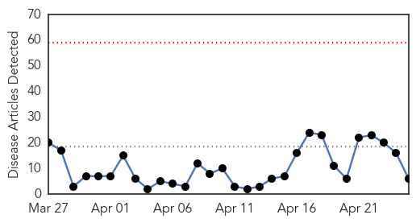
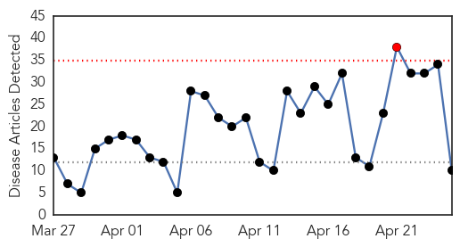
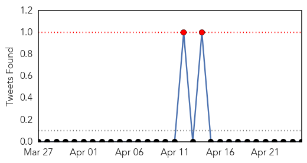

Measles
30-Day Web Trend
0 alerts, 0 warnings

30-Day Twitter Trend
0 alerts, 0 warnings

Article Locations

Article Confidences

Top Articles:
- 0.992
- Second case of measles reported in 2015 – mySteinbach News
- 0.975
- St. Lucie County reports 2nd measles case
- 0.889
- Second St. Lucie measles case also involves 6-year-old girl
- 0.833
- Filipino doctors debunk myths about vaccines
- 0.809
- One child in five still not vaccinated, says WHO
- 0.577
- WHO: Global vaccination progress far off-track
Top Tweets:
-
No tweets found for Apr 25, 2015
Influenza
30-Day Web Trend
1 alerts, 0 warnings

30-Day Twitter Trend
1 alerts, 0 warnings

Article Locations
Article Confidences
Top Articles:
- 0.996
- Illawarra residents should seek flu shots now
- 0.961
- Northland farmers keep watch as avian flu spreads
- 0.944
- Poultry in Midwest infected with bird flu, Illinois preparesThe Rock River Times
- 0.820
- Avian flu confirmed in LaMoure
- 0.751
- April 24, 2015 Archives
- 0.751
- April 24, 2015 Archives
- 0.751
- April 24, 2015 Archives
- 0.735
- Officials: Avian flu won't have negative effect on supply, price of poultry and eggs
- 0.573
- 7 News Belize
- 0.501
- Fowl surprise at border crossing
Top Tweets:
-
No tweets found for Apr 25, 2015